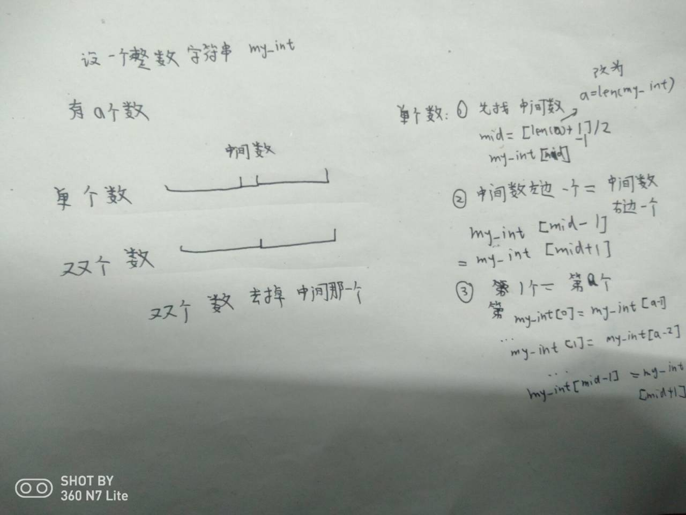

一：基础算法题5道
1.阿姆斯特朗数
如果一个n位正整数等于其各位数字的n次方之和,则称该数为阿姆斯特朗数。判断用户输入的数字是否为阿姆斯特朗数。
(1)题目分析：这里要先得到该数是多少位的，然后再把每一位的数字截取出来，把各位数字的n次方之和和该数一起判断即可。
(2)算法分析：python中有len()函数可以得到一个字符串的长度，因此需要先把一个正整数转化为正整数字符串。然后从高位向低位截取(也可以反过来)。或者高效算法利用for循环切片。
从高位到低位：用正整数除了10的n次方，得到的商就是高位的数，余数就是下次循环的数。
从低位到高位：用正整数除以10，得到的余数就是低位的数，商就是下次循环的数。
for循环：用for循环依次得到每一位数。就是可迭代对象依次显示。
(3)用到的python语法：while循环，for循环，if语句，函数。
(4)博主答题代码：
从高位到低位：
def judge(num):
mysum = 0
n = len(str(num)) - 1
m = n + 1
firstNum = num
while num > 0:
quotient = num // (10**n)
remainder = num % (10**n)
mysum += quotient ** m
num = remainder
n -= 1
if mysum == firstNum:
print('该数是阿姆斯特朗数')
else:
print('该数不是阿姆斯特朗数')
num = int(input('请输入一个整数:'))
judge(num)从低位到高位：
def judge(num):
mysum = 0
n = len(str(num)) - 1
m = n + 1
firstNum = num
while num > 0:
quotient = num // 10
remainder = num % 10
mysum += remainder ** m
num = quotient
n -= 1
if mysum == firstNum:
print('该数是阿姆斯特朗数')
else:
print('该数不是阿姆斯特朗数')
num = int(input('请输入一个整数:'))
judge(num)(5)高效方法：
for循环：
def judge(num):
n = len(num)
sum = 0
for i in num:
sum += int(i) ** n
if sum == int(num):
print('该数是阿姆斯特朗数')
else:
print('该数不是阿姆斯特朗数')
num = input('请输入一个整数:')
judge(num)
2.整数数组
给定一个整数数组，判断是否存在重复元素。
(1)题目分析：利用list的内置函数count计算每一个元素的数量，时间会很多，内置函数list.count(i)时间复杂度为O(n) 外面嵌套一层循环，总的时间为O(n^2)，不是一个高效算法。
可以排序后对相邻元素判断是否相等。还有一个方法是利用set()特性进行判断。
(2)算法分析：根据上面的题目分析用高效一点的算法展示。
(3)用到的python语法：
(4)博主答题代码：
def judgeInt(num):
this_set = set(num)
if len(this_set) == len(num):
print('没有重复')
else:
print('有重复')
my_num = input('请输入一个整数:')
judgeInt(my_num)
3.回文数
判断一个整数是否是回文数。
(1)题目分析：回文数是指正序（从左向右）和倒序（从右向左）读都是一样的整数。
(2)算法分析：可以利用python的切片很方便地解决该问题，但是如果是其它语言的话，没有切片。因此需要考虑普遍的方法。
算法分析如下：

可以看到，我们根据两种不同情况分析，即可得结果。
(3)用到的python语法：if判断语句，切片，函数。
(4)博主答题代码：
def judge(x):
this_str = str(x)
if len(this_str) % 2 != 0:
mid = int((len(this_str) + 1 ) / 2 - 1)
left = mid - 1
right = mid
if this_str[0:left+1] == this_str[-1:right:-1]:
return True
else:
return False
if len(this_str) % 2 == 0:
mid = int(len(this_str)/2) - 1
if this_str[0:mid+1] == this_str[-1:mid:-1]:
return True
else:
return False
num = input('请输入一个整数:')
if judge(num):
print('{0}是回文数'.format(num))
else:
print('{0}不是回文数'.format(num))(5)高效方法：
def judge(x):
return str(x) == str(x)[::-1]
num = input('请输入一个整数:')
if judge(num):
print('{0}是回文数'.format(num))
else:
print('{0}不是回文数'.format(num))只需要一行代码即可以判断，这就是切片的好处。
是不是很简单呢。
4.回文数进阶算法，不限转化为字符串
那有没有什么不需要先转化为字符串的方法呢？也是有的。可以利用前面的阿姆斯特朗数从高位到低位和从低位到高位获取两个列表或者字典进行比较，这里就不分析了，直接上代码：
def judge(num1):
if '-' in str(num1):
return False
if num1 >= 0 and num1 < 10 :
return True
list1 = [];list2 = []
num2 = num1
n1 = len(str(num1)) - 1
n2 = len(str(num2)) - 1
while num1 > 0:
quotient1 = num1 // (10**n1)
remainder1 = num1 % (10**n1)
list1.append(quotient1)
num1 = remainder1
n1 -= 1
while num2 > 0:
quotient2 = num2 // 10
remainder2 = num2 % 10
list2.append(remainder2)
num2 = quotient2
n2 -= 1
num = 0
for i in range(0,len(list1)):
if list2[i] == list1[i]:
num += 1
if num == len(list1):
return True
else:
return False
num = int(input('请输入一个整数:'))
if judge(num):
print('{0}是回文数'.format(num))
else:
print('{0}不是回文数'.format(num))效率确实很低。
5.插入排序
对于未排序数组，在已排序序列中从前向后或从后向前扫描，找到相应位置并插入。
(1)题目分析：这是个简单的算法，只需要把要每个元素依次和相邻的元素比较即可。
(2)算法分析：想用一个变量标记遍历到的元素，然后，有两种方法。
从后先前，把该元素和左边的元素进行对比，如果比左边的元素小，就互换，当左边的元素的编号为-1时停止。
从前先后，把该元素和右边的元素进行对比，如果比右边的元素大，就互换，当右边的元素的编号为数组的长度减1时停止。
(3)用到的python语法：while循环，函数，数据交换。
(4)博主答题代码：
def insert(arr):
for i in range(1,len(arr)):
j = i
while j > 0:
if arr[j] < arr[j-1]:
arr[j-1],arr[j] = arr[j],arr[j-1]
j -= 1
my_arr = list(map(int,input('请输入数组:').split(',')))
insert(my_arr)
print(my_arr)(5)高效代码
用python的列表排序函数sort()可以很方便进行排序。
二：较难算法题1道
这些等到下一篇博客会详细讲解。
1.串联所有单词的字串
给定一个字符串 s 和一些长度相同的单词 words。找出 s 中恰好可以由 words 中所有单词串联形成的子串的起始位置。
注意子串要与 words 中的单词完全匹配，中间不能有其他字符，但不需要考虑 words 中单词串联的顺序。
2.解数独
编写一个程序，通过已填充的空格来解决数独问题。
空白格用 '.' 表示。
较难算法题等到之后博客会详细讲解。